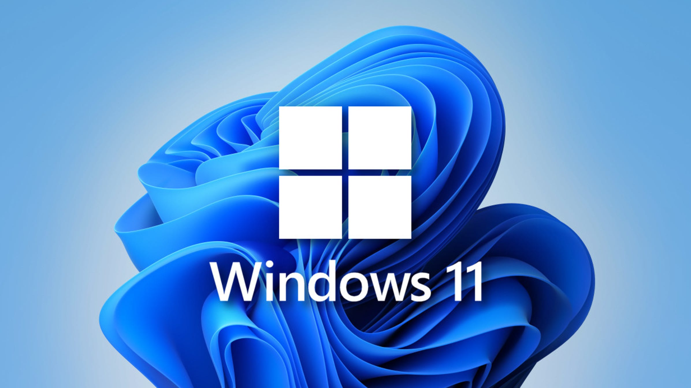
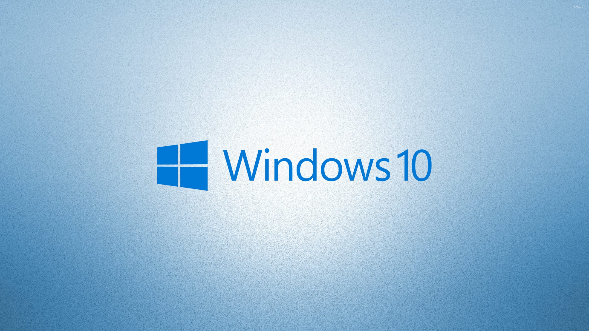

Windows 11 (21H2)
В пакете .iso файл для бизнеса (business) и
.iso файл для обычного использования (consumer)

Windows 10 (19H2)
В пакете 2 .iso файла для бизнеса (business) 32х и 64х
и 2 .iso файла для обычного использования (consumer) 32х и 64х